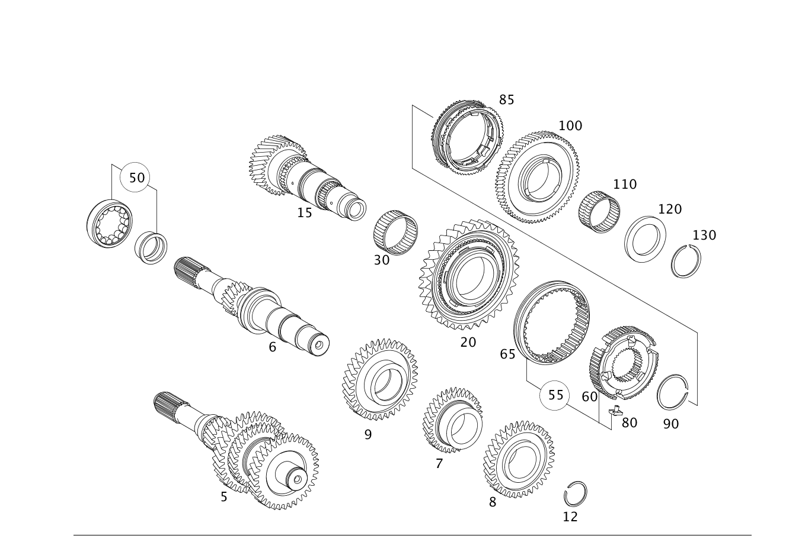

| № | Артикул | Название | Кол. | Примечание | Ограничение |
|---|---|---|---|---|---|
| 5 | A 169 260 01 20 | - Приводной вал | 1 | Автомобили с дизельным двигателем [402] БОЛЬШЕ НЕ ПОСТАВЛЯЕТСЯ | G640 |
| 6 | A 169 262 05 01 | - Приводной вал (ANTRIEBSWELLE) | 1 | Автомобили с дизельным двигателем [402] БОЛЬШЕ НЕ ПОСТАВЛЯЕТСЯ | G640 |
| 7 | A 169 262 11 13 | - Шестерня (ZAHNRAD) | 1 | 3\-я передача [402] БОЛЬШЕ НЕ ПОСТАВЛЯЕТСЯ | G640 |
| 8 | A 169 262 11 14 | - Шестерня (ZAHNRAD) | 1 | 4\-я и 5\-я передача [402] БОЛЬШЕ НЕ ПОСТАВЛЯЕТСЯ | G640 |
| 9 | A 169 262 11 16 | - Шестерня (ZAHNRAD) | 1 | 6\-я передача [402] БОЛЬШЕ НЕ ПОСТАВЛЯЕТСЯ | G640 |
| 12 | A 711 994 03 40 | - Пруж. стопорное кольцо (SPRENGRING) | 1 | Приводной вал | G640 |
| 12 | A 711 994 03 40 | - Пруж. стопорное кольцо (SPRENGRING) | 1 | Приводной вал | G640/G641 |
| 15 | A 169 262 08 05 | - Вторичный вал (HAUPTWELLE) | 1 | 1 \- 4 передача [402] БОЛЬШЕ НЕ ПОСТАВЛЯЕТСЯ | G640/G641 |
| 15 | A 711 262 00 05 | - Вторичный вал (HAUPTWELLE) | 1 | 1 \- 4 передача [402] БОЛЬШЕ НЕ ПОСТАВЛЯЕТСЯ | G640/G641 |
| 20 | A 169 260 17 08 | - ШЕСТЕРНЯ | 1 | 1\-я передача | G640 |
| 20 | A 711 260 03 08 | - Св. вращ. шестерня | 1 | 1\-я передача | G640 |
| 20 | A 711 260 06 08 | - Шестерня (ZAHNRAD) | 1 | 1\-я передача [402] БОЛЬШЕ НЕ ПОСТАВЛЯЕТСЯ | G640 |
| 30 | A 021 981 72 10 | - Игольный венец | 1 | 1\-я передача | G640/G641 |
| 30 | A 021 981 73 10 | - Игольный венец (NADELKRANZ) | 1 | G640/G641 | |
| 50 | A 711 981 00 81 | - Внутреннее кольцо | 1 | Приводной вал | G640/G641 |
| 50 | A 010 981 22 01 | - Подшипник с цил. роликами (ZYLINDERROLLENLAGER) | 1 | Приводной вал | G640/G641 |
| 55 | A 711 260 05 45 | - Корпус синхронизатора | 1 | 1\-я и 2\-я передача | G640 |
| 55 | A 711 260 06 45 | - Синхронизатор (SYNCHRONKOERPER) | 1 | 1\-я и 2\-я передача [402] БОЛЬШЕ НЕ ПОСТАВЛЯЕТСЯ | G640 |
| 60 | A 169 262 04 35 | - Корпус синхронизатора | 1 | 1\-я и 2\-я передача | G640/G641 |
| 65 | A 211 262 17 23 | - Скользящая муфта | 1 | 1\-я и 2\-я передача | G640 |
| 65 | A 211 262 18 23 | - Скользящая муфта | 1 | 1\-я и 2\-я передача | G640 |
| 80 | A 203 262 02 18 | - Нажимной упор (DRUCKSTUECK) | 3 | 1\-я и 2\-я передача [001755] ЕСЛИ ДАННАЯ ПОЗИЦИЯ БОЛЬШЕ НЕ ПОСТАВЛЯЕТСЯ, ТО ЗАКАЗАТЬ ОБЪЕМ ПОСТАВКИ | G640/G641 |
| 85 | A 211 260 14 45 | - Синхронизатор | 2 | 1\-я и 2\-я передача | G640/G641 |
| 85 | A 211 260 32 45 | - Синхронизатор (SYNCHRONKOERPER) | 2 | 1\-я и 2\-я передача | G640/G641 |
| 90 | A 711 994 00 40 | - Пруж. стопорное кольцо (SPRENGRING) | 1 | Приводной вал [402] БОЛЬШЕ НЕ ПОСТАВЛЯЕТСЯ | G640/G641 |
| 100 | A 169 260 20 08 | - Шестерня (ZAHNRAD) | 1 | 2\-я передача [402] БОЛЬШЕ НЕ ПОСТАВЛЯЕТСЯ | G640 |
| 110 | A 021 981 74 10 | - ПОДШИПНИК ИГОЛЬЧАТЫЙ | 1 | G640/G641 | |
| 110 | A 021 981 75 10 | - Игольчатый подшипник (NADELLAGER) | 1 | G640/G641 | |
| 120 | A 169 262 37 78 | - Диск (SCHEIBE) | 1 | [402] БОЛЬШЕ НЕ ПОСТАВЛЯЕТСЯ | G640/G641 |
| 120 | A 169 262 38 78 | - ШАЙБА | 1 | G640/G641 | |
| 130 | A 711 994 02 40 | - Пруж. стопорное кольцо (SPRENGRING) | 1 | Приводной вал | G640/G641 |
| 140 | A 169 260 23 08 | - Шестерня (ZAHNRAD) | 1 | 3\-я передача [402] БОЛЬШЕ НЕ ПОСТАВЛЯЕТСЯ | G640 |
| 150 | A 021 981 76 10 | - ПОДШИПНИК ИГОЛЬЧАТЫЙ | 1 | 3\-я передача | G640/G641 |
| 150 | A 021 981 77 10 | - Игольчатый подшипник (NADELLAGER) | 1 | G640/G641 | |
| 155 | A 711 260 02 45 | - СИНХРОНИЗАТОР | 1 | 3\-я и 4\-я передача [412] БОЛЬШЕ НЕ ПОСТАВЛЯЕТСЯ, ЗАКАЗЫВАТЬ ОТДЕЛЬНЫЕ ДЕТАЛИ | G640/G641 |
| 170 | A 169 262 05 35 | - Синхронизатор (SYNCHRONKOERPER) | 1 | 3\-я и 4\-я передача [402] БОЛЬШЕ НЕ ПОСТАВЛЯЕТСЯ | G640/G641 |
| 172 | A 203 262 28 23 | - Скользящая муфта | 1 | 3\-я и 4\-я передача | G640/G641 |
| 175 | A 203 262 02 18 | - Нажимной упор (DRUCKSTUECK) | 3 | 3\-я и 4\-я передача | G640/G641 |
| 180 | A 711 262 00 35 | - Синхронизатор (SYNCHRONKOERPER) | 1 | 4\-я передача [402] БОЛЬШЕ НЕ ПОСТАВЛЯЕТСЯ | G640 |
| 190 | A 203 260 22 45 | - СИНХРОНИЗАТОР | 2 | 1\-я и 2\-я передача | G640 |
| 190 | A 203 260 29 45 | - Синхронизатор | 2 | 3\-я и 4\-я передача | G640/G641 |
| 190 | A 203 260 36 45 | - Синхронизатор (SYNCHRONKOERPER) | 2 | 3\-я и 4\-я передача | G640/G641 |
| 190 | A 203 260 35 45 | - СИНХРОНИЗАТОР | 2 | 3\-я и 4\-я передача | G640/G641 |
| 220 | A 711 994 01 40 | - Пруж. стопорное кольцо (SPRENGRING) | 1 | G640/G641 | |
| 230 | A 169 262 08 14 | - Шестерня (ZAHNRAD) | 1 | 4\-я передача [402] БОЛЬШЕ НЕ ПОСТАВЛЯЕТСЯ | G640 |
| 240 | A 021 981 78 10 | - ПОДШИПНИК ИГОЛЬЧАТЫЙ | 1 | 4\-я передача | G640/G641 |
| 240 | A 021 981 79 10 | - Игольчатый подшипник (NADELLAGER) | 1 | G640/G641 | |
| 250 | A 711 994 03 40 | - Пруж. стопорное кольцо (SPRENGRING) | 1 | G640/G641 | |
| 300 | A 169 262 12 05 | - Вторичный вал (HAUPTWELLE) | 1 | 5\-я и 6\-я передача [402] БОЛЬШЕ НЕ ПОСТАВЛЯЕТСЯ | G640/G641 |
| 300 | A 711 262 01 05 | - Вторичный вал (HAUPTWELLE) | 1 | 5\-я и 6\-я передача [402] БОЛЬШЕ НЕ ПОСТАВЛЯЕТСЯ | G640/G641 |
| 310 | A 169 260 40 08 | - Св. вращ. шестерня | 1 | Передача заднего хода | G640 |
| 310 | A 711 260 01 08 | - Шестерня (ZAHNRAD) | 1 | Передача заднего хода [402] БОЛЬШЕ НЕ ПОСТАВЛЯЕТСЯ | G640/G641 |
| 320 | A 021 981 82 10 | - ПОДШИПНИК ИГОЛЬЧАТЫЙ | 1 | Передача заднего хода | G640/G641 |
| 320 | A 021 981 83 10 | - Игольчатый подшипник (NADELLAGER) | 1 | Передача заднего хода | G640/G641 |
| 340 | A 203 262 27 23 | - Скользящая муфта (SCHIEBEMUFFE) | 1 | Передача заднего хода [414] СТАРУЮ ДЕТАЛЬ УСТАНАВЛИВАТЬ БОЛЬШЕ НЕ РАЗРЕШАЕТСЯ | G640 |
| 340 | A 203 262 32 23 | - Скользящая муфта | 1 | Передача заднего хода [001738] ДО КП 048986 ЗАКАЗАТЬ ТАКЖЕ ШЕСТЕРНЮ A 711 260 01 08 | G640/G641 |
| 345 | A 639 262 02 35 | - Синхронизатор (SYNCHRONKOERPER) | 1 | Передача заднего хода | G640/G641 |
| 350 | A 203 262 18 34 | - Кольцо синхронизатора (SYNCHRONRING) | 1 | Передача заднего хода | G640/G641 |
| 360 | A 203 262 10 18 | - Нажимной упор (DRUCKSTUECK) | 3 | Передача заднего хода | G640/G641 |
| 370 | A 711 994 02 40 | - Пруж. стопорное кольцо (SPRENGRING) | 1 | Передача заднего хода | G640/G641 |
| 400 | A 169 260 52 08 | - Шестерня (ZAHNRAD) | 1 | 6\-я передача [402] БОЛЬШЕ НЕ ПОСТАВЛЯЕТСЯ | G640 |
| 410 | A 022 981 09 10 | - Игольчатый подшипник (NADELLAGER) | 1 | 6\-я передача | G640/G641 |
| 410 | A 022 981 10 10 | - ПОДШИПНИК ИГОЛЬЧАТЫЙ | 1 | G640/G641 | |
| 420 | A 169 262 03 23 | - Скользящая муфта | 1 | 5\-я и 6\-я передача | G640/G641 |
| 430 | A 169 262 06 35 | - Синхронизатор (SYNCHRONKOERPER) | 1 | 5\-я и 6\-я передача [402] БОЛЬШЕ НЕ ПОСТАВЛЯЕТСЯ | G640/G641 |
| 440 | A 711 260 00 45 | - Синхронизатор (SYNCHRONKOERPER) | 1 | 5\-я и 6\-я передача | G640/G641 |
| 470 | A 169 262 01 18 | - Нажимной упор (DRUCKSTUECK) | 3 | [402] БОЛЬШЕ НЕ ПОСТАВЛЯЕТСЯ | G640/G641 |
| 480 | A 711 994 01 40 | - Пруж. стопорное кольцо (SPRENGRING) | 1 | G640/G641 | |
| 490 | A 169 260 47 08 | - Шестерня (ZAHNRAD) | 1 | 5\-я передача [402] БОЛЬШЕ НЕ ПОСТАВЛЯЕТСЯ | G640 |
| 500 | A 021 981 80 10 | - ПОДШИПНИК ИГОЛЬЧАТЫЙ | 1 | 5\-я передача | G640/G641 |
| 500 | A 021 981 81 10 | - Игольчатый подшипник (NADELLAGER) | 1 | G640/G641 | |
| 520 | A 711 994 03 40 | - Пруж. стопорное кольцо (SPRENGRING) | 1 | G640/G641 | |
| 530 | A 169 262 06 20 | - Шестерня (ZAHNRAD) | 1 | Передача заднего хода [402] БОЛЬШЕ НЕ ПОСТАВЛЯЕТСЯ | G640 |
| 550 | A 711 262 00 07 | - Ось передачи заднего хода | 1 | Передача заднего хода | G640 |
| 550 | A 711 262 01 07 | - Промежуточный вал (ZWISCHENWELLE) | 1 | Передача заднего хода [402] БОЛЬШЕ НЕ ПОСТАВЛЯЕТСЯ | G640 |
| 560 | A 022 981 01 10 | - ПОДШИПНИК ИГОЛЬЧАТЫЙ | 2 | Передача заднего хода | G640/G641 |
| 560 | A 022 981 02 10 | - Игольчатый подшипник (NADELLAGER) | 2 | Передача заднего хода | G640/G641 |
| 570 | A 711 262 00 62 | - Упорная шайба (ANLAUFSCHEIBE) | 1 | Передача заднего хода [402] БОЛЬШЕ НЕ ПОСТАВЛЯЕТСЯ | G640/G641 |
| 570 | A 169 262 10 62 | - ШАЙБА УПОРНАЯ | 1 | Передача заднего хода | G640/G641 |
| 580 | A 022 981 03 10 | - ПОДШИПНИК ИГОЛЬЧАТЫЙ | 1 | Передача заднего хода | G640 |
| 580 | A 022 981 03 10 | - ПОДШИПНИК ИГОЛЬЧАТЫЙ | 1 | Передача заднего хода | G640/G641 |
| 580 | A 022 981 04 10 | - Игольчатый подшипник (NADELLAGER) | 1 | Передача заднего хода | G640/G641 |
| 600 | N 007993 020100 | - Пруж. стопорное кольцо (SPRENGRING) | 1 | Передача заднего хода [402] БОЛЬШЕ НЕ ПОСТАВЛЯЕТСЯ | G640 |
| 600 | A 711 994 04 40 | - Пруж. стопорное кольцо (SPRENGRING) | 1 | Передача заднего хода [402] БОЛЬШЕ НЕ ПОСТАВЛЯЕТСЯ | G640 |
| 620 | N 910143 008003 | - Винт с 6-гр. глвк (SECHSRUNDSCHRAUBE) | 1 | Передача заднего хода; M8X30 | G640/G641 |
Позиций: 85 · подписано на схемах: 85 · колесо — плавный зум в курсор, перетаскивание — пан, двойной клик — зум, клик по артикулу — скопировать.